CHENEK BALAM
FERIA DEL EMPRENDIMIENTO 2026
CHENEK BALAM
El robot acuático chiapaneco que limpia ríos y lagunas y monitorea la calidad del agua.
Sergio Antonio Rayo Cabrera (representante) · Eylan Jarib Cruz Gómez · Ángel Adrián Moguel González · Brayam Alexis Ríos García · Cristian Alfredo Ovando Pérez
Instituto Tecnológico de Tuxtla Gutiérrez · TecNM
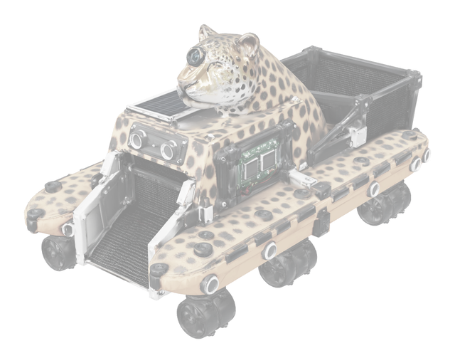
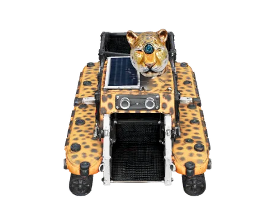


CHENEK BALAM
02 / 13
La basura que llega a nuestros ríos termina en el Cañón del Sumidero y en el mar
45,000 t
de desechos sólidos se acumulan cada año en el Cañón del Sumidero; cerca del 90 % es PET.
59.1 %
de los cuerpos de agua monitoreados en México están contaminados.
11 M t
de plástico llegan a los océanos cada año; los ríos son su principal vía.
Fuentes: López Pimentel (2015), tesis de maestría, UNAM; CONAGUA; PNUMA.
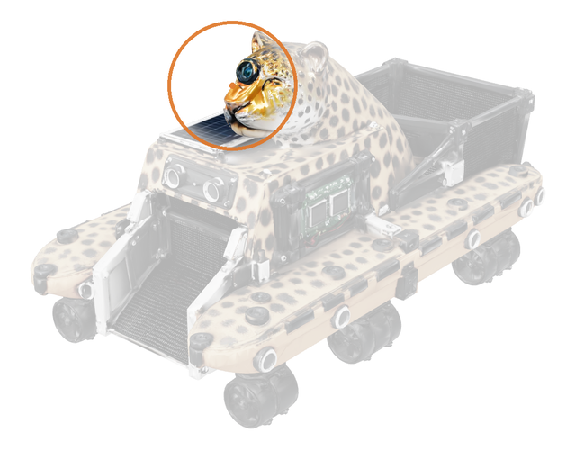
PIEZA 01
Cámara de visión con IA
CHENEK BALAM
03 / 13
Las opciones actuales son riesgosas, contaminantes o inaccesibles
| Método actual | Su limitación |
|---|
| Cuadrillas manuales | Riesgo de infecciones y ahogamiento; lentas y limitadas a las orillas |
| Lanchas a motor con redes | Combustión, derrames de aceite y ruido en áreas naturales |
| Barreras flotantes | Pasivas: solo retienen lo que la corriente les lleva |
| Robots extranjeros | De 15,000 a más de 40,000 dólares, sin refacciones ni soporte en México |
Robots de referencia: WasteShark, ClearBot y Jellyfishbot.
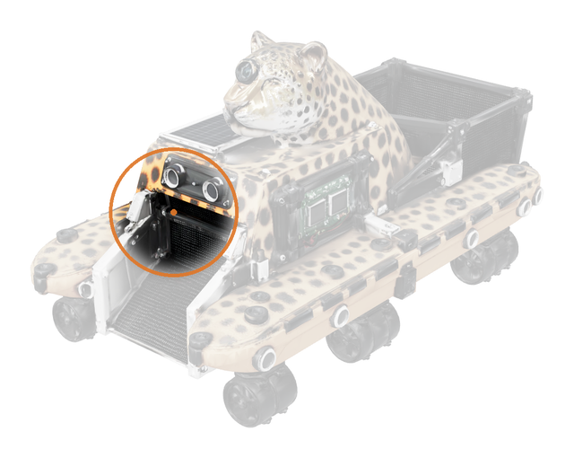
PIEZA 02
Sensores ultrasónicos


CHENEK BALAM
04 / 13
Un catamarán eléctrico que navega hacia la basura y la recoge
120 kg de residuos recolectados en 30 minutos con el prototipo actual.
Operación remota: nadie tiene que meterse al agua.
Monitoreo del agua: pH, turbidez, conductividad y temperatura en tiempo real.
Cero emisiones: propulsión eléctrica y recarga solar.
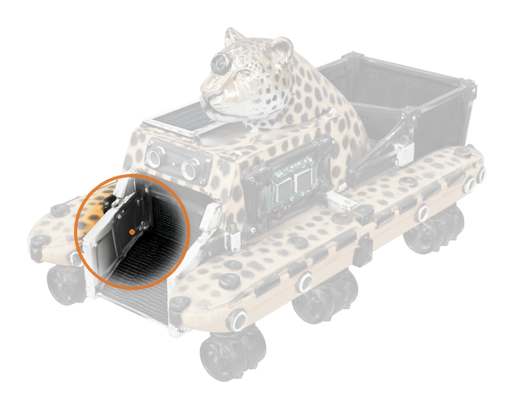
PIEZA 03
Canal de admisión
CHENEK BALAM
05 / 13
Lo que distingue a CHENEK BALAM
Limpieza activa
Navega hacia la basura en vez de esperar a que la corriente la acerque.
Limpia y mide
Sensores de calidad del agua, GPS y pesaje, con datos en una app.
Tecnología nacional
Costo accesible, refacciones locales y respaldo del TecNM.
Identidad chiapaneca
Diseño de jaguar que atrae al turismo y educa sobre el agua.


Construcción del modelo Grande y la mascota del proyecto en InnovaTecNM 2025.
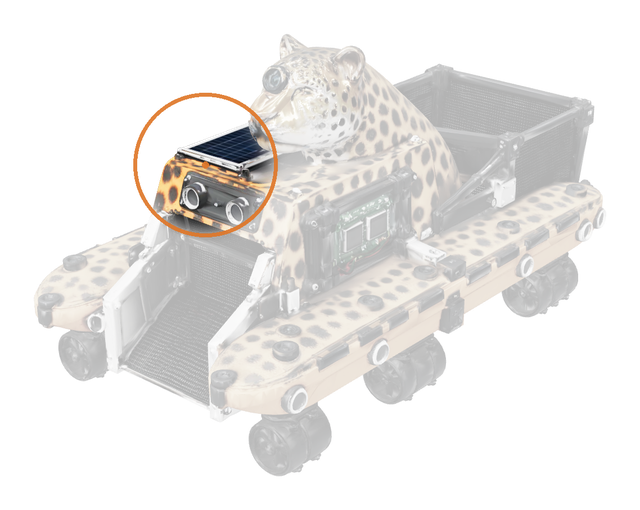
PIEZA 04
Panel solar


CHENEK BALAM
06 / 13
Un proyecto que ya está probado y respaldado
Prototipo operativo probado en agua.
1.er lugar local en Sostenibilidad en InnovaTecNM y etapa nacional en Pachuca (2025).
Convenio con la Secretaría de Pesca y Acuacultura de Chiapas.
Presentado ante la Presidenta de la República.
Marca registrada ante el IMPI y cobertura en más de nueve medios nacionales.
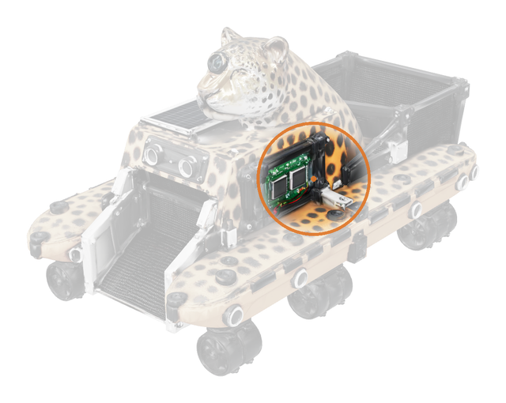
PIEZA 05
Caja estanca de electrónica
CHENEK BALAM
07 / 13
Quién paga por limpiar el agua
| Segmento | Clientes posibles |
|---|
| Gobierno estatal | Secretaría de Pesca y Acuacultura (convenio) y dependencias ambientales |
| Áreas naturales y presas | Cañón del Sumidero y presas del río Grijalva |
| Municipios | Ríos urbanos, canales y lagunas |
| Turismo y empresas | Prestadores turísticos, cooperativas pesqueras y empresas con programas ambientales |

Primer mercado: Chiapas. Después, ríos y lagunas del sur-sureste del país.
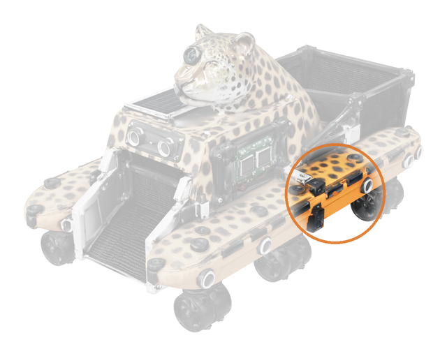
PIEZA 06
Cascos tipo pontón
CHENEK BALAM
08 / 13
MODELO DE NEGOCIO Y ESTRATEGIA COMERCIAL
Tres fuentes de ingreso con un mismo robot

Venta del robot
Con instalación, capacitación y mantenimiento.
Desde [$___] por unidad

Limpieza por contrato
Operamos el robot y entregamos reporte de kilos.
[$___] por jornada

Datos del agua
Suscripción con reportes de calidad del agua.
[$___] al mes
Cómo llegamos al cliente: convenios con gobierno, demostraciones en campo, licitaciones y nuestra presencia en medios y redes.
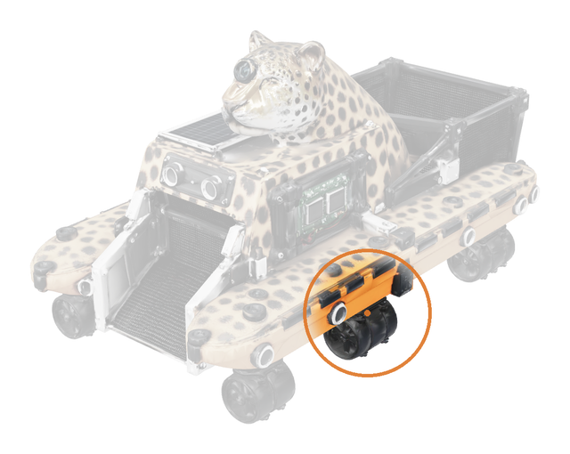
PIEZA 07
Propulsores sumergibles


CHENEK BALAM
09 / 13
VIABILIDAD TÉCNICA Y OPERATIVA
Sabemos construirlo, operarlo y mantenerlo
Prototipo funcionando: estructura, propulsión eléctrica y recolección ya probadas.
Equipo completo: mecatrónica, sistemas computacionales y gestión empresarial.
Fabricación local con componentes que se consiguen en México.
Plan técnico por fases de 8 a 10 semanas, con pruebas en cada etapa.
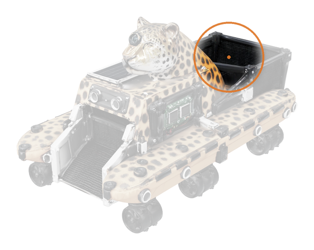
PIEZA 08
Canasta recolectora
CHENEK BALAM
10 / 13
Menos de la mitad del precio de un robot importado
| Inversión inicial | MXN |
|---|
| Catamarán y mano de obra | $45,000.00 |
| Sistema electrónico y sensores | $37,603.72 |
| Software y plataforma (1 año) | $24,940.00 |
| Total | $107,543.72 |
Un robot extranjero cuesta desde
$282,000
y no tiene refacciones en México.
Montos con IVA. Robot extranjero: 15,000 dólares a 18.80 pesos por dólar. Versión premium con navegación autónoma: $226,354.48.
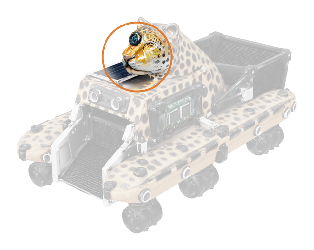
PIEZA 09
Cabeza de jaguar
CHENEK BALAM
11 / 13
Agua más limpia, empleos nuevos y orgullo chiapaneco
Ambiental
Menos plástico en ríos, lagunas y en el Sumidero, sin emisiones ni ruido.
Social
Nadie arriesga su salud en el agua y las comunidades conocen la calidad de su agua.
Económico
Protege la pesca y el turismo, dos motores de la economía de Chiapas.
Empleos que genera: fabricación y ensamble, operación en campo, mantenimiento técnico, software y ventas, con talento formado en Chiapas.
MODELO 3D
Todas las piezas integradas
CHENEK BALAM
12 / 13
De un prototipo a una empresa chiapaneca de robótica ambiental
HOY
Prototipo Normal
120 kg por sesión en ríos y canales
PASO 1
Robot conectado
Sensores, telemetría y app en 8 a 10 semanas

PASO 2
Modelo Grande
De 500 kg a 2 toneladas para lagos, presas y cañones
PASO 3
Navegación autónoma
Venta y servicio en el sur-sureste del país
MODELO 3D
Listo para escalar

CHENEK BALAM
Cuidemos el agua de Chiapas con tecnología hecha en Chiapas
Estamos listos para sus preguntas.
Equipo CHENEK BALAM · Instituto Tecnológico de Tuxtla Gutiérrez
Asesores: Juan Humberto Carpio Tovilla y Jorge Arturo Sarmiento Torres